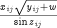

All vector intrinsic functions have the following characteristics:
they take a single argument representing a scalar or array expression;
they return a result of dimensionality and size identical to those of their argument.
The table below lists all vector functions that are recognised by gPROMS.
| Identifier | Function |
|---|---|
ACOS
|
The arccosine (in radians) of the argument |
ASIN
|
The arcsine (in radians) of the argument |
ATAN
|
The arctangent (in radians) of the argument |
ABS
|
The absolute value of the argument |
COS
|
The cosine of the argument (in radians) |
COSH
|
The hyperbolic cosine of the argument |
EXP
|
The exponential of the argument |
INT
|
The largest integer that does not exceed the argument |
LOG
|
The natural logarithm of the argument |
LOG10
|
The logarithm to base 10 of the argument |
SGN
|
The sign of the argument |
SIN
|
The sine of the argument (in radians) |
SINH
|
The hyperbolic sine of the argument |
SQRT
|
The square root of the argument |
TAN
|
The tangent of the argument (in radians) |
TANH
|
The hyperbolic tangent of the argument |
The result of each of the above functions is obtained by applying the corresponding operation to each element of the argument. For example, consider the declarations:
PARAMETER n, m AS INTEGER VARIABLE x, y, z AS ARRAY (n,m) OF SomeQuantity w AS SomeQuantity
Then, x * SQRT(y+w) / SIN(z) is a valid expression representing an n × m array, the (i,j)th element of which is equal to:

for i=1,..,n and j=1,..,m.